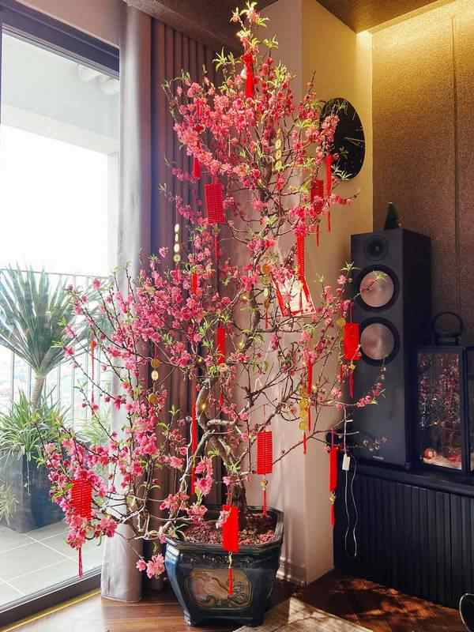
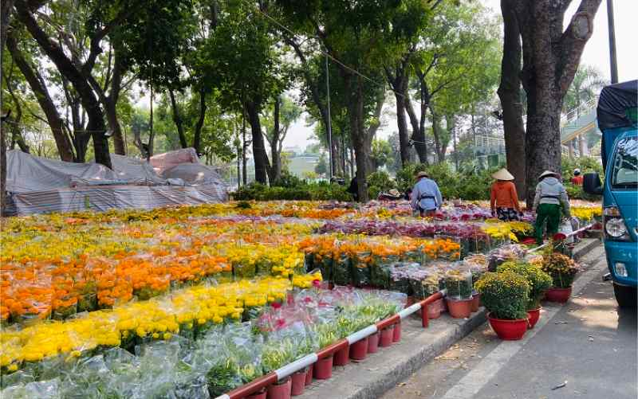

01
Hoa Mùa Xuân
Sắc vàng của mai, sắc hồng của đào — linh hồn của Tết Việt

Miền Nam
Hoa Mai Vàng
Mỗi cánh hoa mai nở là một điềm lành. Người miền Nam trồng mai từ tháng 8, tỉa lá tháng 11 để hoa nở đúng dịp Tết — đây là cả một nghệ thuật của sự kiên nhẫn.
5
cánh hoa mai
= ngũ phúc
Phúc · Lộc · Thọ · Khang · Ninh

Hoa Đào · Miền Bắc

Chợ Hoa Xuân
▶ Video
Chợ Hoa Xuân
Chợ hoa ngày Tết mở từ 23 tháng Chạp, nhộn nhịp nhất vào đêm 30. Mỗi gia đình chọn cho mình một cành mai, chậu cúc — lựa chọn đó là cả một nghi thức chào đón mùa Xuân.